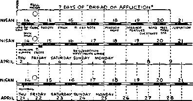

.88
.88
..92 .98
.95 .95
.87 .88
.84 .85
the earth distress of nations with perplexity: the sea and the waves (the restless, discontented) roaring; men's hearts failing them for fear and for locking to the things coming upon the earth (society); for the powers of the heavens (ecclesiasticsm) shall be shaken. . . When ye see theaathings begin to come topass/tnen know that the Kingdom of God is at hand. Look up,’ lift up your heads, rejoice, for your redemption draweth nigh.—Matt. 24:33; Mark 13;29; LMkes*l;2&-31.
Wat
Q^J^emJng Gmg«tb,mda)^tatooFU.2i!iHt
Vol. XLII
Semi-Monthly
No. «
Anno Mundi 6049—March 15,1921
CONTENTS
THis is Mt Boot._______________________________________
Historical Groundwork of Passover._______
Preparations for the Passover_______________
Changes in Passover...............................
The Evening Sacrifices____________________________
Order of Paschal Ceremony_____________________
The Cup of Blessing______________________________
Body Given and Broken_________________________
B» or Goon Codbage______________________________
The Accuser .............................................
Bight for your Brethren......................
‘•We Will Serve the Lord”......................
Weapons Provided_____________________________________
Service Essential ..................................
Health and the Holt Spibit-------------------
Earthly Relations, Spiritual Relations..
"I will stand upon my watch and will set my foot upon the Tower, and will watch to see what He will sap uKto me, and what answer I shall make to them that oppose me."—Habakkuk t: 1.
THIS JOURNAL AND ITS SACRED MISSION
THIS journal is one of the prime factors or instruments in the system of Bible instruction, or “Seminary Extension”, now being presented in all parts of the cixilized world by the Watch Tower Bible & Tract Society, chartered A. I). 1SS4, “For the Promotion of Christian Knowledge”. It not only senes as a class room where Bible students may meet in the study of the divine Word but Also a channel of communication through which they may be reached with announcements of the Society’s conventions and of the comma ol its traveling representatives, staled “Pilgrims’, and refreshed with reports of its conventions.
thir “Korean Lessons” arc* topical rehearsals or reviims of our Society’s published Sri'iUEs most entertainingly arranged, and very lelpiu! 1.» all who would merit the only honorary degree which the Society accords. xi/,.. I n bi hei Munster I V. I). 31.), which translated uito English is Minister of God's Ward Our treatment of the International Sunday School Lessons is specially for the older Bible nuden:^ and teachers. By some this feature is considered indispensable
Tin-, lournal stands firmly for the defense of the only true foundation of the Christian's hope now being so generally repudiated —redompi mn through the* precious blood ot “the man ('hi 1st Jesus, who gaie hiniM'H a iinniiiii [a corresponding price, a substitute] tor ill”. । I Peter 1 : 19; 1 Tiniot h.x 2 . G i Build mg up cm this sure foundat ion the g old, si 1 \ <>r and pi ecious st ones । 1 < ’orint hians 3 : 11 -15; 2 1 ’el er 1 ; 5-11 ) of the Word of Cod. its t urt hcir mission is to “make* all seo w ha I is the I allow s]np of the mvstei \ w Inch . . Jias •)eeu hid m Cod, ... to the intent 1h.it now might be mad*' known by the church the manilohl wisdom of Cod"—“which lu other ages t\as not made known unto the sons of mon as it is now re\eal<*d”.— Ephesians 3:59. lo.
! st-inds tree from all parlies, Muds and creeds of men. while it seeks molt1 and more to bring its e\ery ulterance into fullest nu>?‘' .ion to the will of Cod in Christ, as expressed in the holy S«tij >1 ui es. Jt is thus lieo to declare boldly w h:ilsi>e\ er the Lord Tati1 pok<-n .n<ording to the divine wisdom granted unto us to under st ami his m n-r.iiii es. Its aliunde is not dogmatic, but confident; or we 1 m>\\ whereof wo aliirm. treading wnh unpin it taith upon the sure jnomiscs ot Cod. it is held as a trust. 1o be used on!> in his ;erwiio, home our decisions relative 1o wlutl mas ami wliat mav not appear m its columns must he amorduig Io our judgment oi his ;ood ph .mme, the teaching oi his Word, lor the upbuihling of his people in grace ard knowledge. Am! we not only invite but urge our ceadem to pro\e all its utterances by the infallible Word to which reference is constantly inaile to lacilitute such testing.
TO US THE SCRIPTURES CLEARLY TEACH
Chat the church is “the temple of the ]i\ing Cod”, peculiarly‘“his workmanship”: that its construction has boon in progress throughout the gospel are—ever since Chust lieciuiip the world’s Redeemer and iho (’hml Corum- Slone ot his temple, through xvlihh, when nmshed. Cod’s blessing shall come “to all people”, and they find access to him.—1 Corinthians 3 1G, 17 ; Ephesians 2 : 29-22 ; Cenosis 28:14; Galatians 3:2’.).
Thai meantime the ihisoling, shaping, and polishing of consecrated belieiers in Christ’s atonement for sin, progresses; and when the la-l of these “living stones”. “elect and pre< ions,” shall have been made reads. the groat Master Workman ax ill bring all together ■n the lirsi I't'Mirrcction; and the leniple shall be tilled with his glory, and be the meeting place between God and men throughout <tm Millennium.— Itevclation 15 : 5-s.
fbat the basis of hope, for tho church and the world, lies in the fact that “Jesus Christ, by the grace of God, tasted death for every man.” “a ransom lor all,” and will bo “tho true light which hghteth eiery man that cometh into the world'*, “in due time”.— Hebrews 2:9. John 1:9; 1 Timothy 2.5, G.
That the hope ot tho church is that she may be like her Lord, “see him as he is,” be “partakers of the divine nature’,’ and share his _loi> ins joint-beir.--1 John 3.2; John 17.2-1, Romans <S : 17 ; 2 Peter 1:4.
11 e ti'M present mission of tho church is tho perfecting of tho saints for the future work of service; to develop in herself every : i <•, i<> bo । Jod’s w itness to the xvorld ; and to prepare to be kings and priests in the next age.—Ephesians 4:12; Matthew 24 : i 1 . Rev elation 1 : G ; 2D : G.
rii.it the hope for the world lies in the blessings of knowledge and opportunity to be brought to all by Christ’s Millennial kingdom, the ’.■ainmoii of all that was lost in Adam, to all tin- willing and obedient, at the hands of their Redeemer and his gloriliod church, s “on all the wiltullj wicked will be destroy! d.-—Acts 3:19-23; Isaiah 35.
Published oy
WATCH TOWER. BIBLE 6-TRACT SOCIETY
124 COLUMBIA HEIGHTS a o BROOKLYN, NY. U S A
Foreign Ofruts : British: 34 Craven Terrace. Lancaster Galo, tendon W. 2, Canadian 270 Dundas St., W, Toronto, Ontario; Australasian • 495 Collins St, Melbourne, Australia, South Afrc
Can: 123 Plein St., Cape Town, South Africa
I’LEXSE APPRESS 1IIF SoCIE'I Y IN EVERY C XSF.
YEARLY SUBSCRIPTION PRICE; I'xiii n Stmts. 00; C\N\p\ and Miscellaneol s Forfig n, $15o, Grjvl’ Binnix', A i s i r: \ l vs .1, ANI> South Africa, Ss Aiimrit'.ui remitlames should bo made by Express or Poslal Money Ciders. <n 1>\ Bank Diaft Canadian, Briftsi), South African, and Ansi । abmiati immittances sh-mld be Blade Io Iniiiuli Clint aula Remit lances trom scattered tweign territory nun be Hindi' Io the Brooklyn oihce. but b> 1 uh rnatioiial Postil! Miillt'V Oidcim eidv.
(Bo> < i /'n 11 mn la t ion s of this )im i nal aypf ar in sa; ci al lawnanr*)
Editorial Committee: Tlrs journal m joiboJied nrdrr the sin >i” \ i - ion of an edihi’i il commillee, al least 1hi'"c oi vlimn hm< n 'd and appi o \ od as i j nt h < a< h ;■ nd e\ erv ai 1 "-lo ippe.-i i ng in 1 lu -<• । I "m irn. The iijmrs o| (be editorial commillee aie J I1’ IP. i'i’ । ; <mi»,
W. E \ \x A w ri i?. ii, I11. lb miso , G H 1 ’isii I r. E. \\ . B':i i si:\.
Terms to the fjord's I'oor: All Hille ''fvr’e nts who, by ic-ison of old ago or otler infirmity or a 'vet i-y, nro u> 'Me t<> p ‘y f'>l d ■. j<-.irn d. v.' 1 I t rpt>b<"l f:w 11 1 *n x m” i
• postal card c:wh P’ i.v t.t ■'if‘.. .r c.< v mid t v- m'ti pros’ ion V o tn<> r.-1
only williniT. but auxioua, tHat all tueh be on our mt cujitjuuall/ and m touch with tho Bcrean btu .i- s.
Notice tO Subscribers* V.’-* <t-> rot, rm a nil, , ‘ > nJ n'ir.i.>f <■ lo’o^h Jrii.' o>r i r- .v->lor f >r ’1 iv v svti-’r ,n o । J.. । , I ar < ,jy ci r<ww »U>io livid ated within ft rnonf h by rlmni’o Ines; rn mn ilatn,,i > n>Hi v r i;.p<'r I ' J.
Entered a« .S’z'-ond < 'laps Un'l' " <i t I ‘rix-/ a Y , ) <■ to ce u > - t hr
GERMAN MARKS BAD INVESTMENT
In a recent issue of The Witch Towint. as al-o of The Golfen Age. some reference was made to a document on British affairs, published m New York. Appaxmtlv some of Ilie friends wrote to the publishing concern and a few' of them, at Last, were solicited by mail for the purchase of German marks as an Inxestmeni. In response to inquiry as to \alue of such an iiBestment we express our belief that purchase of foreign money with tin1 hopp ol a rise in its value would be very unwise. Conditions are too uns<?ltle<l to hope1 lor appreciable improxement In European finances.
I.BSA. BEREAN BIBLE STUDIES
ByMwnsoF'<TAQEWA(M SPAnO'.'S
Chapter IV: “The Great Day of Atonement”
Week of May I . . Q. H9-95 Week of Max 15 . Q. lxM-109
Week of May 8 . . Q. 96-102 Week of Mav 2 2 . Q. J 10-1 15
Week of Mav 29 . . Q. 1-8
Neic Tabernacle Shadows, with questions and notes, A5<? each
STATEMENT REGARDING TOBACCO
Some friends imxe misunderstood the import of our statement made in these columns, our issue of Notember 15, 1B20, column 2, paragraph 2, concerning tobacco. There was Mirel.x no inioniioii to encourage the use of tobacco. Our altitude is the saint' as it lias always been. To Us the list' of lob.icco M»em^ miiiccosMiry. mythical, and undesirable from twery stan<lp<iinl. lint H> ibe is not ^peciliod in the Dibit' as "in, nor i" if dtj"ig-fialed in human statutes a< a crime. Sui vl,\ ilioso f.irts ought Io bate "ome weight in dfinriniiiing <>nr at uiude toward Ilie >ubjoct and in h'lcporing our c\jirtm<io!i< to the point w here lliey nrt* o]i]io<t*d to lobacco hut Hid rabid about H. Il i" one of tho things which are lawful. Imi :iip m>i expedient out' of the things which detract decidedly Iroin one’s power am] influence a" an mnlia"sa< lor of (’]iri<l.
oiher fi lend", imi ob]e( img to the gcneial tenor <>1 our ren ia l <i l>< >ui l ob irro, ha \ e ex pre"sp< I | heiimt‘1 \ es as fee] mg that 1 lie i'n!ii|iarhnii of loharro with otiioii^ was unhappy :md unfair. Oumis art' a food and tobacco j'. pot 'die betielils and detriments of the two things were nof intended to be brougdit into comparison at all. but merely tin* point ol odor the smell ot' onions h unal I r.u-i ivo to ma’i\ people, tin* smell of tobacco is imat 1 r.mi i\e to many people. ’There the relation (‘lids.
Il is imposxilile. dear brethren, to satisfy exeiwone. We lm\e no d<‘sire to otleiid, men m figures of speech or in language. I>ut if we axoid all offence w e must needs go out of the world: for mention of anything al all this side the pearly gates may call forth objections from somewhere. Experience has pi-oxen this to be true. Ei'her xve must do nothing at all, or else doing something, \\e must use the be"t judgment available at the time of doing and trust tho Lord to oxerrule to the final good of his people. We ari‘ not superhuman beings.
REQUEST CONCERNING REMITTANCES
In so fai‘ as possible please make remit t am-es by Post Office or Express Money Orders or Dank Drafts. If personal checks uro used they should be cerlitK'd. for which \oiir local bank will make no charge. Private chocks are also subject to exchange charges, and if lost, much time and inconvenience are required tn make the adjustment.
. ___ _ ...__ 9__
Vol.. N1.II
March 15, 1921
No. 6
“Noir lie are the bodi/ of Christ"; “Ami he is the Head of the bodii."—-1
Corinthians 12
Colossians 1 : 18.
REASON. guided by the Lord's Word and encouraged by the Lord's invitation (Isaiah 1:18), voiihl -nggcst not that Jous did not mean what he said when he referred to the bread as being his body, but that lie (entirely capable of saying what he meant) meant something which is not immediately apparent, not discernible by the casual reader or without the aid of the spirit.
By way of having clearly before1 our minds the heaven-given record of the institution of the memorial of our Lords’ death, we present all of the1 New Testament accounts* of that momentous evening, as far as they relate to this subject:
MATTHEW 2(1
20 Now when even was come, he was sitting at meat with the twelve disciples; ... 20 And as they were eating, Jesus took a loaf, and blessed, and brake It; and ho gave to the disciples, and said. Take, eat; this is my body. 27 And he took a cup and gave thanks, and gave to them, saying. Drink ye. all of it; 2S for this is my blood of the covenant which is poured out for many unto remission of sins. 20 But I sav unto you, I shall n<»t drink henceforth of this fruit of the line, until that day when T drink it new with you in my Father’s kingdom.
30 And when they had sung a h,\mn, they went out unto the mount of blivis.
LUKE 22
14 And ulion Hie hour «ns come, he sat down, and the apostles with him, 15 And ho said unto them. With desire I have downed to eat ibis passover with vou before I suffer : 16 for I say unto you, I shall not iiat it, until it he fulfilled in the kiiiL’dom ot God 17 And he received a cup, and when he had gneii thanks, he said. 'Take this, and <1 it ide it ainony yonr-selres • is for I say unto you, I shall not drink from henceforth from the fruit of the vine, until the kingdom of Cod shall comp. 10 And lie took a loaf, ami when he had given thanks, he brake it, and gave to them, saying, this is my body winch is given for ymi: this do in reniembt anre ot mo. 20 And the cup in like manner after supper, sayim:, This cup is the new Covenant in m,\ blood, that which is poured out for you. . . ,
29 I appoint unto you a kingdom, oven as my Father appointed unto mo, 30 that ye may eat and drink at my table in my kingdom.
MARK 14
17 And when it was evening ho cometh with the twelve. . . . 22 And as they were eating, he took a loaf, and when he had blessed, he brake it, and gave to them, and said. Take ye: this is my body. 23 And he took a cup, and when he had given thanks, he gave to them : and they all (hank of it. 24 And he said unto them. This is my blood of the covenant, which is poured out for many. 25 Verily I say unto you, I shall no more drink of the fruit of the vine, until that day when 1 drink it new iu the kingdom of God
26 Ami when they had sung a hpiin, they went out unto the mount of Olives.
1 CORINTHIANS 11
23 For I received of the Lord that which I also delivered unto you. that the Lord Jesus in the nieht in which he was bc-trn.ved took bread: 24 Ami when he had civ on thanks, he brake it. and said, 'ims is my buoy, which is broken for you: this do in remembrance of me. 25 In like manner also the cup, fitter supper, saying. This cup is the new covenant in my blood : thm do, as often as ye drink il, m remembrance of me. 26 For as often ns ye eat this bread, and drink the cup, ye proclaim the Lord’s death till he come.
1 CORINTHIANS 10
16 The cup of blessing which we bless, is it not a participation in the blood of Christ? The loaf which we break, is it not a participation in the body of Christ? 17 Seeing that there is one loaf, we, who are many, are one bodj : for we all partake of the one loaf.
In comparing these accounts one is struck with the 'act that tlw announcement, "This is my body,'"’ is made in the same identical form in each of the passages. Another item of great interest is the reciprocally explanatory statements about the cup ; that is, those statements about the cup which are not exactly alike in all of the records, but each of which helps us to understand what the others mean. Still another thing to be noted is our Lord’s remark about not drinking of the fruit of the vine until the time of th(> kingdom of God, and his other words about not eating of the passover until it be fulfilled in God’s kingdom. We will look at these last two matters later.
It was Jesus who spoke those words. The Scriptures are very careful in the use of names. They never say Christ whim Jesus is meant; nor Jesus whim Christ is meant. They do not say Christ Jesus when Jesus Christ i.- the thought. So here it is Jesus who speaks and who says; "This i< mi/ body which is given for you,” or, "Thi< is mi/ body which is broken for you”. To whatever mider.danding wo com,1 about th,1 body, it cannot ignore ur oierlook this simple truth. Jesus was our Lord's human name: it implied his humiliation and lowly <-■1010 in comparison with the glory which he had 1 ad with the Lather before the world was.- John 17: 5.
In any consideration of the facts involved in this ordinance which Je-us instituted on the night of his Inti-aval, il is nececcarv to have the various Scripture in counts '-learlv in mind. By way of familiarizing onr--.ehes v, nh these narratives, lot us look first rather 'i1 i11111elv al Ilie text of the Gospel according to Matthew, mid .-ulne<|iiently at the other.-, m points where they are di.-tim-t.
HISTORICAL GROUNDWORK OF PASSOVER
Now <"• tiii: first pay of uxLi:\vi:nfi) bread: This vas the fourteenth day of Nisan, or the first month in the Jewish religious xear; for the divinely given law-had sei that day as the !ir.-t of seven days (Exodus 13: li. 7) in which no leavened bread could he eaten. A glance at the institution of the passoxer type' is almost e-sential if lie are to baie the times and seasons in-xolied in this subject clearly in mind. The Israelites l.ad been in Egypt iuo hundred-fifteen years, and in
*As is customary in these columns, such Bible quotations as are made arc from either the Common or King James Version, or from the American Standard Revised Version, unless special note is made to the contrary. servitude much of that time. Treating of this sore affliction of Israel in Egypt are Psalms 88 and 89, which were written by two men, Hernan and Ethan, who lived at that time and who felt that affliction. These two men were Ezrahites and immediate sons of Zerah (1 Chronicles 3:6); and Zerah was one of those seventy who went down into Egypt. These two Psalms are probably the oldest literary productions the world has to show.
It was in these hard times that Moses was born, a well-favored child, although his mother was by nature past the time of childliearing. He was hidden at his birth that he might not be slain, as he was hidden at his death that he might not be worshiped. Under divine providence he was nursed by his mother. Forty years he lived as a courtier; another forty as a shepherd, and during this time doubtless learned to contemplate and to realize the grandeur of God. At one time God appeared to him and gave him a commission, a divine charge, for the delivery of his people Israel from the Egyptians.
Miraculous powers are given Moses, and armed with these and with divine direction to lead him he proceeds to Egypt to fulfill Jehovah’s purposes concerning his fleshly people. When Moses’ message is delivered to Pharaoh, that monarch answers it by added affliction to Israel. Whereupon Pharaoh is plagued five times, and he hardens his heart against the Lord when ho is punished for sin. Whereupon God hardens Pharaoh's heart five times: so that he sins for a punishment.
THE PLAGUE OF DARKNESS
These plagues showed a tendency to increase in severity. Some of them at least were at the beginning of the month Nisan. On the tenth day the pascal lamb was taken up. Then in all probability followed the three days darkness in Egypt, during which time the Israelites were circumcised. This is apparent from the account in Joshua 5:2- 9, where it is said that circumcision was not performed in the wilderness, but that all of those who came out of Egypt were circuu cised. Now Joshua was to “circumcise the children of Israel the second time", implying that they had been circumcised once before en masse. Moreover, the time corresponds exactly. Forty years before the day when the children of Israel passed over Jordan they had taker, up their first pascal lambs. Then they were circumcised: and the darkness was not only a plague on the Egyptians but also a protection to the Israelites as Hey sat sore. Even so forty years later Jehovah struck the Canaanites with such terror that they dared not stii to hurt his people while they were sore. As in Joshua’s time, so in Moses', the eleventh, twelfth, and th’rteenlh days, the Jews were busy with circumcision. On the fourteenth they kept the Passover. Thus the two divine oidinances come together in time, even as their spiritual substitutes are intimately connected in fact- - baptism replacing circumcision, and the Lord’s Supper the Passover. The Lord Jesus united them in his question to James and John, “Are ye able?”—Matthew 20: 22.
The darkness in Egypt was evidently raised by noon or afternoon so that the people of Israel would have time to slay their lambs and make necessary preparations. T'lie lifting of the darkness would also bring unusual activities for the Egyptians, as many waiting matters would have to have immediate attention. Thus they would not be likely to interfere with the preparations of Israel. On the fourteenth day. at even, the Pa<sover was eaten; and at midnight the destroying angel visited the homes of the Egyptians, Israel's firstborn. due. io God, being saved by the blood of the lamb. The Egyptians’ gods were overthrown and their dogs struck dumb. The fifteenth day, the Israelites having come out of Egypt, say, three million strong, was a day of travel to Succoth. The sixteenth, they came to Etham; the seventeenth, they reached Pi-hahiroth; the eighteenth. Pharaoh arms; the nineteenth Pharaoh pursues; the twentieth, he overtakes, in the afternoon; this evening Jehovah’s cloud settles between Israel and the hosts of Egypt; at the command of Jehovah, and at the outstretched rod of Moses the night wind blows and the waters divide so that the Israelites pass over safely after midnight ; with the dawning light the bodies of the drowned Egyptian warriors were discernible, strewn on the shores of the lied Sea, whose waters had rushed in and engulfed them; then came the song of praise at the deliverance.
This ended the season of unleavened bread: it was no longer appropriate that they eat “the bread of affliction”. (Deuteronomy 16:3) The analogy might be 1 racial on up to the giving of the Law, which corresponded to Pentecost, but that would be outside the immediate subject.
PREPARATIONS FOR THE PASSOVER
Where wilt thou that we make ready' for thee to eat the passover? Our Lord's disciples might make ready anywhere during the time. Houses at Jerusalem were not to be hired ; but during the time of the feast they were to be had by common right for these sacred purposes. Jesus had only to indicate his preference in the matter ; the disciples would be able to do the rest.
They made ready' the passover: Peter and John vere sent for this purpose (Luke 22:8), and perhaps it was they who presented the question, “Where wilt thou?” They alone, from all that the account in John’s Gospel shows, knew that Judas was about other business : but the rot supposed that he was preparing things necessary for the Passover. (John 13:21-30) Even Peter and John did not know the particularities of Judas’ intent, as is evident from the statement: “Now no man at the table knew for what intent he [Jesus] spake thus [What thou doest do quickly] unto him”— J nd as.
This whole matter is so inter-related that it seems necessary to digress here long enough to show that the supper of John 13 was not the paschal or Passover supper, but was that held at Bethany the second night before the time of unleavened bread. The Evangelist himself says that it was “before the feast of the passover”. (John 13 :'l) And another passage says that it nos tiro flayn before. (Matthew 26: 2) It wa> also Iwo miles from Jerusalem, at Bethany; it was the same supper at mhieh Alary broke her alabaster box and from which Judas went to bargain with the chief priests. The only seeming objection to this is our Lord's word to Peter: “Verily I say unto thee. The cock shall not crow, till thou hast denied me thrice". Either the number must be understood as carrying over to both of these clauses (i. e„ the cock shall not crow a third time, the third morning shall not have come, until thou hast denied me as many times), or, much more likely, ‘Within the time of cock-crowing, thou shalt deny me thrice’. The Lord did not say, ‘The cock shall not crow at all till thou hast denied me’. The thought seems to be not so much that of the imminence of the denial, as it was when the same warning was repeated two nights later (Matthew 26:34), as the rapid succession of denials when once they would begin. Peter denied his Lord once before the first crowing, and three times before the second. That is, ‘Are you so sure of yourself, Peter? Verily I tell you, the time shall be, and that shortly, when you shall deny me thrice within cockerowing’—en (Tel: tor option la, at or in cock-crowing. (Mark 13:3--)) At the Passover Supper it is said: “This night. before the cock crow’’ (Matthew 26:34; Mark 14: 30; Luke 22: 31) : but these are not the words in John 13. The Gospel of John refrains from touching on the Passover; the beloved Apostle apparently deferring to the messenger of the first church, St, Paul— the Corinthian epistles being written considerably before John’s Gospel.
CHANGES IN PASSOVER
Now to return to the preparations for the Passover. Peter and John went and spoke to the landlord whom Jesus pointed out to them by a sign, then proceeded with the other preparations. But first it is necessary to show wherein the Passover observance at the time of our Lord differed from its original observance in Egypt. And why should it differ at all? you ask. We answer that it was necessary to differ in some points. First of all, it was never observed but once in Egypt and the destroying angel was not abroad at any other time. We know that Jesus recognized some of these changes; and either he as Michael, ‘the Prince of the House of Israel’ (Daniel 10: 21). had directed such changes so that they would fit into his needs at the first advent, or he had overruled them and kept them in certain bounds, so that they could still be used by him. And if Jesus made use of anv of the changes it is fair to suppose that he made use of them all. otherwise exceptions might reasonably be expected to be noted. And where Jesus’ feet have trod, there* is holy ground. A list* of the principal points of difference between the first Passover and those later observed, and also a li<t of those points in which There were no changes, follows:
♦Abridged from Tosaphta, a Hebrew historian of antiquity.
DIFFERENCES IN PASSOVER OBSERVANCE
IN EGYPT
(1) railure to take up the liinib on the lentil day was not accompanied by penalty of death.
(2) Of the Passover in Egypt it is said. Let him and his neighbor next to him take a lamb.
(3) The blood of the I’assover lamb in Egypt was not commanded to be sprinkled on the altar and the fat consumed there.
(4) Of the Passover in Egypt it is said, Ye shall put of the blood upon the two posts, and upon the lintel.
(5) At the first Passover it was commanded. None of you shall go out of the door of the house until morning.
(G) The paschal lambs in Egypt were slain by everyone in his own house.
(7) Where they ate the passover in Egypt there they were to lodge.
IN PALESTINE
Failure to take up the lamb at the time appointed was punishable by death.
But it is not so said in respect to succeeding generations. although the custom was very generally followed.
But this was the rule in later times.
It was not so in other generat ions.
But this was not the rule In after times; our Lord and his disciples all went out considerably before midnight.
But the passovers afterwards were slain in one place—in the Court of the Talternacles and of the Temples.
In later times they might eat it in one place and lodge in another—as Jesus doubtless would have lodged in Bethany, had not more weighty matters been in store.
STABLE PASSOVER ITEMS
(1) To eat the passover in Egypt several families might unite: so it was with after Passovers.
(2) The Passover lamb in Egypt was of the flock, a male, without blemish, of the first year: after Passovers were just the same.
(3) Of the Passover in Egypt it was said. Ye shall not leave aught thereof until the morning: the same was triii' in after times.
So Peter and John doubtless proceeded in the customary manner to make ready for the Passover. Lambs could be taken up by the individual and brought up to Jerusalem, or they could be bought there in open market, or purchased in the Court of the Temple at a dearer rale, concerning which and similar hucksteries, the Savior said: ‘They have made the house of prayer a den of thieves’. (Matthew 21: 13) If any one brought his own lamb it was subject to such severe scrutiny by the priests that it was frequently thought best to submit to the priestly graft. They interpreted the law, “without blemish.” so rigidly that no less than seventy-three real or imaginary imperfections were on their list.
Passover lambs were killed only in the Court of the Temple, all according to a very carefully worked out plan; for there wore many thousands of them to be slain. After the lamb was bought, brought to the Court (in case it was not already there), and approved, it was killed by the hand of the family or group representative who was assigned to this part of the work—in thi« case either Peter or John, The one who did the slaying had to stipulate for whom and how many the lamb was to serve. The blood was passed in a vessel along a line of priests and poured at the base of the altar: while' the fat was cast on the top of the same great brazen altar. The body was then carried back to the place where the group or party was to sup: the flesh was roasted and the skin given to the landlord.
PASSOVER AT NORMAL TIME
We mention a few of these things to show that Jesus and his disciples did not eat their passover a day earlier than did the rest of the Jews and that they could not have done so without exciting such comment as would amount to a tumult, which would certainly have given occasion for violence before the time. There is not the slightest indication that Jesus and his disciples were in any degree irregular in their eating of the passover. To this is brought the objection of John 18:28: “They themselves [the Jews] entered not into the Pr<etorium, that they might not be defiled, but might eat the passover”. Does not this seem to indicate that either Jesus ate the passover a day too soon or the Jews a day too late? To this objection we answer: Neither the one nor the other. Jesus ate his passover and the Jews theirs on one and the same night, which was the evening of the fourteenth day (See Matthew 26:17, above), “the first day of unleavened bread, when they killed the passover”. (Mark 14:12; Luke 22:7) And how about the passover which the Jews were reserving for themselves at the time of Jesus’ arraignment in the iudgment hall of Pilate?
That passover is not to be understood as the paschal lamb which all had eaten the evening before, but as the Passover bullock. 'These bullocks were slain at Passover time, but not as the Passover beast proper; for that had to be a lamb or a kid. But these bullocks were prominent in connection with the second day of unleavened bread, the same day. ordinarily speaking, on which our Lord died. These bullocks differed from the paschal lamb (1) in that the latter was always and all of it roasted while the former were sodden or boiled, and (2) in that the lamb was roasted whole and eaten without the breaking of bones, while the bullocks were broken up and parted among the people. The paschal lamb was a necessary service to which the Jews were bound by the law, but they might leave the city the morning after eating of the passover if they chose; and if they did so, then no bullocks needed to be killed for them. But if they stayed any more days of the feast than the first, then they could not eat anything they chose but must eat of these bullocks or sheep, because their diet must be holy at this time. This is another difference between the first Passover and the later ones.
This day following the eating of the passover, the anniversary of the trip to Suecoth, was prescribed in the law as holy and no servile work might be done in it; it was accounted to be and kept as a sabbath. It is so called in Leviticus 23: 6, 7, and 15. On this day the males of Israel were to appear in the Court of the Temple with a burnt-offering and a double peace-offering, called hagigah, which were to be a bullock or a sheep-—possibly according to the ability of the offerer. Mention is made (2 Chronicles 30:24; 35:7, 8) of “bullock* and oxen for the Passover”, and of “sacrificing the passover of the herd”, all of which cannot be understood of that which was to be eaten on the fourteenth day; for that was unalterably a kid or a lamb. This, then, was that which the evangelist John refers as to the Passover when he speaks of the Jews fearing to enter Pilate’s judgment hall.
EVENING AND MORNING
Now when even was come: There was more than one method of counting days among the Hebrew people, even as there are two or three methods with us today. We count usually from midnight to midnight, but time is reckoned as being either before noon or after noon; witness our railway time tables. It often happens that days are counted from sundown to sundown, or from sunrise to sunrise, depending upon the kind of work involved. So there was an even greater variety possible among the Jews. There was the Sabbath day which waa reckoned from sundown to sundown, and which naturally influenced other days somewhat. But the natural evening is often counted as belonging to its own day, very much as we speak of it; for instance, “when even was come,” referring to the lateness of the day: “when even was come,” referring to the lateness of the night. (Matthew 14:15,23) “He shall be unclean until the even,” “Ruth gleaned in the field until the even,” both using the word in the same way that we do.
The truth is that evening is always evening, but it is sometimes a question as to which day the evening belongs and when it begins. The sunset commenced and ended the Sabbath, which is plain from Mark 1:32: “And at exeti. when the sun did set.” as also from the passage, “men to even to celebrate their sabbath”. (Leviticus 2.3:32) This last is spoken concerning the Day of Atonement, but Jewish history is abundant in showing that it was considered to apply generally to all their sabbaths. Siphri. a very ancient Hebrew commentator, says on this last passage: “On the ninth day of the seventh month he begins and fasts while it is yet day; for so they add from the common to the holy time. And behold in all the sabbatizing thou sabbatizest [in ail the sabbaths which thou observes! | thou must add likewise.” Another Jewish commentator, Abarbanel, says: “From even to even shall be your sabbaths; that is, every sabbatizing that you have, whether it be the creation sabbath, or the set festivals, or feast of trumpets, or expiation [atonement], they were from even to. even according to the course of creation; as it is said, The evening and the morning are the first day”. These have a value in showing that the special days were to begin with the evening, but they do not precisely show where the evening began.
THE EVENING SACRIFICES
Now, if evening and sundown were identical or if evening invariably began with sundown, there would seem to be no object in .saying, “and at evening when the sun did set”. Our belief is that the word evening is even more comprehensive than our word afternoon, in that the evening begins at noon and lasts till midnight; that the morning begins there and continues to morn until high noon, when it is perfect day. (Proverbs 4: 18) Evening and morning are both active participles, and suggest a continuous ei'f-ing or e&bing away from the sun’s meridian on the one hand and a continuous approaching or waxing to that full day on the other. Compare our p. in. (post meridian) or afternoon and a. m. (ante meridian)or forenoon, the p. m. time running till midnight and the a. m. time beginning there. We have no thought, of course, that our method of counting time is inspired, but rather that both systems find foundation in a common and unavoidable fact. If evening does not include twelve hours how can it be said that evening and morning constituted a day?
Furthermore, we have the testimony concerning the “evening sacrifices" which were offered at three in the afternoon and concerning which it was commanded that they should be offered, just as the Passover lamb was to be killed, “between the two evenings". (Numbers 28:4; Exodus 12 : 6 ; Numbers 9 :3, margins) Normally the evening sacrifice was slam at half past two and offered at three ; but on the day of the Passover Supper, and at other times when great numbers of animals had to be killed, the slaying of the exening sacrifices was put forward to as early as half past twelve, but never under any circumstances was it placed one minute before noon. On tin1 other hand, the passover might be eaten at any time up to midnight, but absolutely not later.* Note
•Many wiser men than we hope to be in the flesh have kept away from the subject of time in connection with the Passover and its antitypirnl Memorial celebration. The subject does present difficulties, but there must be some way of fitting the various pieces together and of nmktng one satisfactory whole out of them Whether the following is satisfactory or not, let each reader judge, but it seems to us to satisfy the various records and to make a consistent and connected story possible.
The Jaw oi the Passover proscribed seven days of unleavened bread, beginning \m11i the fourteenth day of the first month. (Exodus 12: IS. 19) If the usual method of reckoning be followed there would be eight days and not seven. Yet seven days are distinctly stipulated as being sufficient; the twenty-first, beginning at even, was to be a day of feasting with no restrictions as to food. That the dajs of unleavened bread were seven and not eight is also plain from Deuteronomy 16:6-8, where after having already mentioned the first day of unleavened bread as the time when the passover was to he slain “at even, at the going down of the sun1' (when the sun declines or begins to drop from the meridian), then six days more are mentioned—seven in all. The seventh day in that list is the eighth day, counting from the day of slaying, which day of slaying was also the first of unleavened bread.
In the following chart we have attempted to harmonize our own calendar with that of the Jews, both today and at the time of our Lord. It must be remembered that the moon does not come to the full in all parts of the earth at the same time. Furthermore, the ancient Jewish method of counting time was on the basis of Palestine observations, of course, which would be different from ours here. The course which we have always taken in determining the date and time of the Lord’s Supper is merely to look at the Jewish calendar to ascertain the month and then decide on the evening preceding the time when the moon is full, using the time of eastern parts of the United States. This makes the celebration vary in respect to the moon in different parts of the earth ; but since all cannot observe it at the same moment, we follow this method, thinking it reaches a larger majority of our readers than any other calculation would do.
FIRST PASSOVER,
JESVS’USST PASSOVER.
1921 MCMORlAg
also in this connection: “And in the morning, rising up a great while before day”.—Mark 1: 35.
The Jews interpreted the expression, “between the two evenings,” as meaning between the beginning of decline in the sun’s path and its full sinking out of sight. Midway betw een these two evenings was the evening sacrifice usually ofi'ered, and beginning about that lime and running until sundown were the paschal lambs slain. It may be that the expression has a still wider meaning, and that it was left ambiguous so that it might also include within its limits the slaying of both tin- typical paschal lamb and that of the antitypical. The typical lamb was slain about three, and Jesus died at three, the time for the next evening sacrifice—i.e. both killed ‘between the two evening’ sacrifices.
METHOD OF SITTING
He was sitting at meat with the twelve: Because th<> passover could not be eaten until it began to be dark—“they shall eat the flesh in the night” (Exodus 12)—therefore the expression, “and when even was come,” means quite fully come, when it was veil advanced, when it was dark. The Jews did not eat tin1 passover except sitting. The reason they gave for this was that servants ate standing, and on this night they were to remember that they had been delivered from bondage. Even the poorest in Israel could not (‘at the passover standing. So Jesus gave honor to fins cuJoni by sitting. But this sitting at the I’a.-sover vas not like our sitting, nor was it according to the manner of their sitting at other times. It was a special posture by itself. The Hebrews had two words, one used especially for this position. It was leaning on the left elbow with the left knee bent under the right and the right leg stretching at ease or touching the floor.
And as they were eating, jesus took a loaf: The bread was taken at supper, the cup aftei supper. “After supper he took the cup.”—Luke 22:20; 1 Corinthians 11: 25.
That we may more clearly trace this supper and see and appreciate the parts of it which Jesus made use of to establish the new ordinance, we may with profit look at the order of the supper, as that order is carefully described by various of the Talmudists, or Jewish commentators. No history was ever more punctiliously kept from decay than were the sacred Hebrew writings and the Talmudic comments on them, and they are therefore likely to be accurate portrayals of the times or customs, or whatnot, although they cannot be taken for strictly doctrinal purposes. The ceremony, briefly stated, follows :
ORDER OF PASCHAL CEREMONY
(1) The paschal supper began with a cup of wine mingled with w’atcr. The master of ceremonies said: “Let us give thanks,” and drank the cup. Compare this cup with that of Luke 22: 17.
(2) Next the bitter herbs are brought on; a table already covered was carried in, on which are lettuce and sour sauce. The administrant dips the lettuce into the sauce (not the charoseth, which was used later) anil eats it. This table was straightway taken out of the room ; and this odd procedure (of bringing the table in and of eating a small portion of lettuce and then having the table taken out again) wa- >o calculated as to -Timulate igie.-tions on the part of the less mxperi-enced so that the command of Exodus 12: 2(>, 2" might be fulfilled, which said: "And . . . when your children shall say unto you. What mean ve by this servue? that ye shall say," etc. If questions failed, the head of the group discoursed upon the things being commemorated.
(3) Afterward there was set unleavened bread, and the thick sauce called charoseth (made of dates, figs, raisins, and vinegar, pounded or ground together), and bitter herbs (lettuce, endive, succory, beets, and hoarhound), and the lamb roasted whole with the heart, liver, etc., and the boiled flesh of personal thankofferings, free-will offerings, etc., which may have been offered by some individual in that group that day, and which had to be eaten before midnight. The administrator says: “Blessed be he that created the fruits of the earth,” and eats a small portion of the herbs dipped in the sauce.
(4) Now a second cup of wine was mixed, and the master of ceremonies said: “'Phis is the passover which we therefore eat because (foil passed over the houses of our fathers in Egypt". Lifting up the bitter herbs, he said : "We therefore eat these bitter herbs because the Egyptians made the lives of our fathers bitter in Egypt”. Next the unleavened bread was taken, and the words: "We cat this unleavened bread because our fathers had not time to sprinkle their meal to be leavened before Cod revealed himself and redeemed them. [Compare Exodus 12:391 We ought therefore to give thanks, to praise, to laud, io glorify, to extol, to honor, to magnify him that hath done for our fathers and for us all these wonders; who hath brought us from bondage to freedom, from sorrow to rejoicing, from mourning to a good day, from darkness to a great light, from affliction to redemption ; therefore must wo say before him, Hallelujah, praise ye the Lord, praise ye servants of the Lord, praise the name of the Lord”. And so he said over the 113th and 114th Psalms, concluding with a prayer. Whereupon they all drank off the second cup.
Among the various viands or victuals, or whatever we may call them, which accompanied the paschal lamb at its eating, there were two which were held to have the most eminent and most honorable place, and those two were the bread and the wine. At the other parts of the supper the participants might be excused for (hanging their position, but while eating the bread and drinking the wine they must use the correct reclining posture. For the eating of unleavened bread at this time they had the express command of the law (Exodus 12: 18) ; but as for the presence and use of the wine it is not so clear. The Jews said they took it on the general ground that a man must cheer up his wife and children to make them rejoice at the festival, as the law prescribed, “And thou shalt rejoice in thy feast”. (Deuteronomy 16:14) And what would cheer them, they argued, better than wine?
(3) Tin n hiking two loaves tile leader broke one and 'aid it upon the whoL- one. blcs-ing it (not tile time ;.'l,‘iri'd to in Malthew 2(i: 2li, that wa- later); and putting some bread and bitter herbs together he dipped ibem into the ch a rose f h and blessed them ; lie ate the bread and bitter herbs; if there were peaee-oflerings to lie eaten they were hero b]es-ed and eaten ; and lastly tile lamb was given thank.- over and eaten the other persons pic.-ent following the leader in all these eatings and drinkings, of course. Half of the broken loaf of bread was given to someone in the company io keep as an iiphtcomiii. a last bit, with which the feast was closed. It was apparently at the time when Jesus dipped the unleavened bread and bitter herbs into the sauce, charoseth, that he said: "Due of you shall betray me, even oik* of the twelve that dippeth with me in the dish”.—-Matthew 26:21-25 ; Mark 14:18-21.
THE CUP OF BLESSING
(6) Having eaten of the bread and herbs and lamb, the officiatin' expresses thanks over a third cup, called distinctly and always by the Jews, “the cup of blessing”. Maimonides says: “He drinketh two cups after the unleavened bread, the cup of blessing after the meat and iho cup of the Halid". And many of the ancient Jewish w l iters concur. The reason w by this w as called the cup of [Jessing is partly because the "blessing" after the meal was said over it. and partly to distinguish it from the first cup. over which also a special blessing was said. The Jews identilied this eup with "the cup of salvation” spoken of by J)a\ id. They bad a parable running something like this: This cup of blessing was delivered to Abraham with (he request that he bless it. and lie said, f cannot because Ishmael came from me; to Isaac, and he said. I cannot because Esau came from me; to Jacob, and he said. 1 cannot because I married two sisters, which the law forbids; to Moses, and be said, I cannot, because I was accounted unworthy to enter the land of Israel, either dead or alive; to Joshua, and he said, I cannot, because I have no son. Lastly it was given to David, saying. Take it and bless it: he said. I will take it and bless it; I will take the cup of salvation, I will call upon the name of the Lord.
Although an uninspired parable, it has much more than a grain of truth in it.
The Apostle uses this very term, “cup of blessing,” in speaking of the Lord's Supper. (1 Corinthians 10:16) And the first special action that is described as touching on the cups at Jesus’ last Passover seems to be in connection with this third cup; for “He took the cup and gave thanks, and said. Take this and divide it among yourselves”.—Luke 22: IT.
THE CUP OF PRAISE
(7) Lastly came the fourth cup. the cup of the Hallo!. so called because (he Hallel. begun over the second eup, was now finished over this one. The happadah. or showing forth of their deliverance (Compare 1 Corinthians 11:26). had been concluded with the rehearsal of the 113th and 111th Psalms. Now the rehearser begins w itli the Until, ami leads the chanting of it on through the 116th. 111th, and 118th I’salms; for these six I’sab.'' ncie the Ihilh'l, each closing with the word halhl oi giaise hallil-ujah. praise ye 1 lie Lord. The Jeus had a 6 w words of blessing o\er the Psalm, and then the meal was quite ended. '1’his last feature is not mentioned any Seripture account.
rl’lie alioie is a brief recounting of the order of ceremony at the eating of the passoier. omitting the washings, which were two. This little chart will perhaps help to fix the things in mind, showing in dotted lilies what parts were observed by the Jews but not employed by Jesus in the Memorial institute, and the dark parts showing the portions our Lord utilized for new' purposes and with new meanings.
rs,#o poliu'h cvv
*CUP or
<.uC
As THEY WERE EATING, JESUS TOOK BREAD: It is not certain whether a break in time is to be understood between the taking and the subsequent blessing and breaking of the bread. But the probability, viewed in the light of Luke's account, is in favor of a break. It seems to suggest that, instead of laying by the half loaf for last morsels, Jesus changed the usual course here, saved a whole loaf and later gave morsels around with explanation as to their new meaning. “As they were eating’’ precludes the thought of after supper, for the tal-ing, }mt not necessarily for the blessing and breaking.
Blessed and brake it : This was the customary order with our Savior, and also with the other Jews, excepting on this Passover evening, when they fust broke, then blessed the bread. Whether the Jewish custom had been founded on some acceptable fact or not, it did not now suit our Lord’s purpose; for he had to bless first this evening and be himself broken on the morrow.
BODY GIVEN AND BROKEN
Tin- m wn ruin : The.-c word- bring -poki-n in ■ ill'll neariii'.-w to i:ic I’n-'owr. iii-l eaten, will be more < [oar: as though our Loid would nil': 7'Ais is now niv bodv in the sum" ^i-n-i1 that the p.iwhal lamb has been my boih hitherto. Ii this \ lew be taki n it cuts through al one stroke all the centuries of nonsense about 1 laiwiib-tant i.d ion. i on'iibstant lat ion, mas.', etc., etc. It is a liistoiical fait that 'inec the destruction of the Temple the Jew.' have not had the pa'chal lamb. Instead of it and the two loaies of bread, they have three loines. So. aside from what other reasons our 1’edeemer may hate had for the substitution of the I.read for the lamb, he did foreknow this forced future change even for unbelieving Jews, and ordered the change not only ahead of the destruction of the Temple, but before its vail was rent in twain.
The beloved Luke’s account says: “This is my body which is given for you;" the Apostle, long his companion, gives it "hroleen for vou’’. The expression "given” seems to refer not. so clearly to the paschal lamb as to the manna which was given or sent down from heaven and which Jesus had already explained to be his flesh. (John 6: 33-58) The "broken” body alludes more plainly to the daily sacrifice' than to the paschal lamb; for not a bone of that lamb was broken, whereas the lambs of daily sacrifice were broken up, cut into pieces: and yet they arc both of them a. figure of Christ Jous, his body. Besides the breaking of it, there are other points in which the' daily lamb and the paschal lamb difler: (1) the' daily sacrifice was for all Israel; but the Passoier lamb, each of them, that is. was for one particular family or group; (?) the daily sacrifice was lor sin; the pas.'Over is not so described ; (3) the daily sacrifice was burnt: the passover was eaten. Yet there was a common point: they both prefigured our 1 Aird’s body.
This do in remembrance of vie: In remembrance of me. not in remembrance of the Passover in Egypt. Under the Law there were several eatings of holy things, the festival sacrifices of the tithes, thank-offerings, peace-offerings, etc. Jesus’ words imply: These have all had their day; now, eat this in remembrance of me.
[Concluded in April First Issue]
“Hare not I commanded thee? Be strong and of good courage; he not afraid, neither he thou dismayed: for the Lord thy Cod is with thee whithersoever thou goext.’’—Joshua 1:!).
JOSIH A was a. typo of Christ, including, of course, the ii i mbers of the body yet this side the vail. Joshua and his followers were not a warlike people, though they weie required to war against their enemies. When about to enter the land of Canaan Cod encouraged Jo'lma and those with him. As Joshua needed encoiu ,'ig'cnient then at the hands of the Lord. so the antitvpii-al Jo-lma class, the church this side the vail, now needs encouragement. The words of this text, therefore, may bo taken aj words of encouragement giieii to those who are following the great Ma-ter. I hese things coni erning the people of Cod were ■written aforetime for the benefit of th" Christians on earth at the end of file go'pel age.- -1 Corinthians 10:1-1?.
As Joshua and his followers must meet many enemies at the time of entering the land of Canaan, so the church now is surrounded by enemies on every side, which they must meet before entering the kingdom. Courage is needed now; and they who give heed to the commandments of the Lord and who wait upon him, watching his leadings and obeying his commandments, will receive the needed courage and help.
Primarily all dominion belongs to Jehovah. He is the great God of the universe, lie created man, placed him in Eden and gave him authority to rule the earth and have dominion over it, and to fill it with a perfect race of people. Jehovah knew the end from the beginning and he outlined his great plan and made provision to meet every exigency that would arise. We have now come to the end of the age, a time when he has promised to give us a clearer understanding of his plan, that our hearts may be encouraged to meet the battle that is before us.
Over against Jehovah and his kingdom stands a mimic god, a usurper — the one who was in Eden, beautiful and glorious at one time, but who meditated a usurpation of God’s authority and dominion and declared in bis heart: “I will be like the Most High”. He deceived mother Evo, caused Adam to violate God’s law, and plunged the whole human race into sin, degradation, and death. Hi' drew after him a large number of the angelic hosts, seducing them and causing them to join with him in the debauching of mankind. He was thereafter designated by Jehovah as the dragon, that old serpent, the devil, and Satan.
More than six thousand years ago Satan began the establishment of his empire. As Jehovah is the ruler of the great universe invisible and purposes to establish his righteous reign in earth, so Satan has a realm invisible which we may properly call the devil organization heavenly. The apostles declare that he is the god of this world (3 Corinthians 4:4), and that the whole world lies in the wicked one. (1 John 5:19) We have abundant proof, therefore, both from the Scriptures and from physical facts, that the devil has an organization earthly. He has controlled every nation that has been on the earth except one, and the time came when he controlled that one.
God made a covenant with the nation of Israel and gave to them his law, by which they were governed. There seem to be two separate and distinct reasons why this law was given: (1) To foreshadow the development and establishment of God’s kingdom under the great Messiah; and (2) to serve as a schoolmaster, or pedagogue, to lead the nation of Israel, protect and shield them, until the coming of Christ. Jehovah specially safeguarded the Jews against evil spirits by prohibiting them from having any fellowship whatso-e\er with mediums. He established amongst the Jews the true religion, to wit, the worship of Jehovah as the one and true God, and commanded that they should have none other.
Satan, to be like the Most High, inaugurated a false religion and caused the nations round about Israel to worship him under various forms or titles. All the false religions of the world are directly traceable to Satan. Then in due time he overreached the church organization on earth, organizing a system out from it, which may be properly designated the faithless religion, as distinguished from the faithful followers of Christ Jesus. Thus we see that Satan has an organization invisible, and a beastly, earthly organization visible, and a false and faithless religion. He is designated as “the prince of the power of the air” (Ephesians 2:2) -—the spiritual ruler exorcising power invisible to humankind; and also as “the prince of this world” (John 12:31), who rules by usurpation, fraud and deception the governments of this earth. His earthly organization is represented from time to time as a beast, i. e., a rule by violence. Satan operating through the minds of fallen men, forming organizations among men, uses these organizations for the purpose of coercing the minds of men and coercing the conscience of men, and ultimately coercing their being to conform to his way.
In Genesis 3:15 we read: “I will put enmity between thee and the woman, and between thy seed and her seed; it shall bruise thy head, and thou shalt bruise his heel”. The seed of the woman here mentioned is the Christ, the woman symbolically being the Abra-hamie-Sarah covenant (Galatians 4:26) The seed of the serpent, Satan, the devil, is composed of the various organizations or systems by which he has dominated and persists in trying to dominate and control things of the earth, as well as to dominate the evil ones associated with him in his heaven, viz., the demons. This statement in Genesis conclusively proves that the time must come when there would be a great and final conflict between the seed of the woman and the seed of the serpent; and that the seed of the woman, to wit, the Christ, would triumph over all evil and evil systems. St. Peter declares that there shall be a final judgment in which Satan’s empire shall pass away: “The heavens and the earth, which are now, by the same word are kept in store, reserved unto fire against the day of judgment and perdition of ungodly men . . . The heavens shall pass away with a great noise, . . . the earth also and the works that are therein shall be burned up. . . . The heavens being on fire shall be dissolved, and the elements shall melt with fervent heat. Nevertheless we, according to his promise, look for a new heavens and a new earth, wherein dwelleth righteousness.”—2 Peter 2: 7-13.
Without doubt such is the great judgment day referred to by the same Apostle when he mentions that the demons are restrained in darkness, “reserved unto judgment” (2 Peter 2:4)—“reserved . . . under darkness unto the. judgment of the great day”. (Jude 6) The prophet Isaiah seems to have in mind the same time when, addressing himself to the followers of the Lord, those who follow after righteousness, he says: “Lift up your eyes to the heavens, and look upon the earth beneath: for the heavens shall vanish away like smoke, and the earth shall wax old like a garment”. (Isaiah 51:6) And again, when he said: “Come near, ye nations, to hear; and hearken, ye people: let the earth hear, and all that is therein; the world, and all things that come forth of it. For the indignation of the Lord is upon all nations, . . . and all the host of heaven shall be dissolved, and the heavens shall be rolled together as a scroll.” (Isaiah 34:1-4) When a garment waxes old it is cast away, picturing how the order of things earthly, the devil’s organization, shall be cast off; and when a scroll is rolled together it is laid aside, and when it goes up in smoke its destruction is pictured; thus showing the destruction of the dominion of Satan, visible and invisible.
The book of Revelation, particularly chapters 12, 13, 17, 18 and 19, pictures the judgment upon the evil order. “And I saw heaven opened, and behold a white horse; and he that sat upon him was called Faithful and True, and in righteousness doth judge and make war. . . . And he was clothed with a vesture dipped in blood; and his name is called The Word of God. And the armies which were in heaven followed him upon white horses, clothed in fine linen, white and clean.” (Revelation 19: 11-14) Here is pictured the great Lord of lords, Christ Jesus, leading the assault against the powers of darkness; and the armies represent his associates, his followers, those who are in glory beyond the vail and those who are honored on this side the vail. The judgment time seems to be now. Clearly it must take place before the judgment of the peoples of earth, because the Apostle Paul definitely states that that judgment will be in righteousness (Acts 17:31), seeming clearly to indicate that the unrighteous systems must be destroyed before the judgment of the peoples of earth in righteousness begins. Does the church on this side the vail have any part in this judgment? The Apostle Paul answers: “Do ye not know that the saints shall judge the world? . . . Know ye not that we shall judge angels?”—1 Corinthians 6:2, 3.
Since the children of Israel were under the supervision of the Lord through the terms of the Law Covenant, it would seem entirely proper to say that Satan was not the god of this world at all times, but that he became the god of this world at the overthrow of Zedekiah. True, he had his organization in earth from the time of the flood forward, but the people of Israel were the people of God and therefore they did not lie in the wicked one. Israel as a nation, like the gentiles, became vain in her imaginations and foolish in her heart, changed the truth of God into a lie, was seduced by Satan to worship other gods, and worshiped and served the creature more than the Creator, turning to Baal worship inscad of God worship; hence “God gave them over to a reprobate mind, to do those things which are not convenient”. (Romans 1:28) And when this wickedness had reached a climax under the reign of Zedekiah, Jehovah caused the prophet to say to him: “And thou, profane wicked prince of Israel, whose day is come, when iniquity shall have an end, thus saith the Lord God: Remove the diadem, and take off the crown; this shall not be the same: exalt him that is low, and abase him that is high. I will overturn, overturn it: and it shall be no more, until he comes whose right it is; and I will give it him.”—Ezekiel 21: 25-27.
According to our chronology, this transpired in 606 B. C. The gentiles there established a universal empire under Nebuchadnezzar. Gentile dominion was to exist for 2,520 years. Satan there became the god of this world, because the gentile powers were under the dominion of Satan. This lease of power to the gentiles ended in 1914; hence the disintegration of the old order began there and hence we might properly expect God’s judgment upon the things heavenly (invisible) and the things earthly (visible) to begin.
With this understanding of the situation we can see how we arc now in the greatest crisis of all the ages. The great conflict is on between the Lord of righteousness on the one side and the lord of evil on the other side, and the time is at hand for the fulfillment of the declaration of the Lord: “Now is the judgment of this world: now shall the prince of this world be cast out”. (John 12:31) “Now is come salvation, and strength, and the kingdom of our God, and the power of his Christ; for the* accuser of our brethren is cast down, which accused them before our God day and night.” (Revelation 12: 10) While this judgment is not finally accomplished, it is in process of enforcement and all the saints have the honor of participating in it in a measure. (Psalm 119:5-9) It is to be expected, of course, that the great adversary, that old serpent, Satan the devil, will use all of his powers and agencies in an attempt to destroy the people of God,
THE ACCUSER
Satan is •‘the accuser of the brethren”. It is his spirit operating in the minds of others that leads such to bring false accusations against those who are following Christ, in an attempt to discredit them and to destroy their influence and their efforts in the way of promulgating the message of righteousness; and the more active one is in the Lord’s service the more such an one becomes a target for the adversary. The brethren, therefore, should expect to have all manner of accusation laid against them. One of the names applied to him is “devourer” or destroyer”; and the Apostle Peter says of him that in this time he “walketh about, as a roaring lion, seeking whom he may devour”. The brethren, therefore, should be slow to receive an accusation against another and refuse to believe it until the proof is adduced, clearly establishing the fact. Love must be the predominating power of control amongst the brethren of the Lord: and love for the brethren will cause them to stand shoulder to shoulder, v.arring the good warfare of faith and holding up one another and striving at all times to aid one another in the conflict. To be loyal to the Lord we must be loyal to the brethren; and to be loyal to the brethren means that we are to look out for their welfare and to aid one another.
Satan will also seek to discourage the brethren by ridiculing their efforts, by holding before them their «wa
imperfections and weaknesses and by making it appear to them that they are unable to win the victory. Hence the necessity for them to be encouraged; and the Lord has abundantly provided for their encouragement. Again, lie will attempt to inject pride and vain glory into the minds of some, which he knows will lead to their fall, because ‘‘God resiseth the proud, and giveth grace to the humble”. Again, he will attempt to cause them to war among themselves and thereby devour each other. (Galatians 5: 15) St. Paul definitely points out that at the end of the age, where we now are, there will be great need for strength and encouragement. “Finally, my brethren, be strong in the Lord, and in the power of his might. Put on the whole armor of God, that ye may be able to stand against the wiles of the devil.” He then instructs us as to what the armor is, telling us to be faithful servants of the truth, having on the breastplate of righteousness, a pure heart; our feet shod with the gospel of peace—in other words, to be meek, long-suffering, patient, loving, one toward another, dwelling in peace with all; having an abiding faith and confidence in the Lord; having an intellectual understanding and appreciation of the Word of God thoroughly in our minds; and having the sword of the spirit, his Word, both as a weapon of offense and defense, and praying for self and all the brethren, and watching at all times.—Ephesians 6: 10-18.
FIGHT FOR YOUR BRETHREN
Nowhere in the Scriptures arc the Lord’s people admonished to fight each other. On the contrary, they are admonished to dwell in peace with each other and to dwell in holiness. Pictures are given in the Bible for the purpose of encouraging spiritual Israel. Nehemiah, who was a type of the Lord Jesus at his second advent (Z’99-248), not only armed his men with him to rebuild Jerusalem, but he instructed them to fight for their brethren. Commenting upon this (See Z’99), Brother Russell said:
“Not only did Nehemiah see to the arming and preparation of his band, but additionally he stimulated their faith, saying: ‘Be not afraid of them; remember the Lord who is great and terrible, and fight for your brethren’. We are to remember as soldiers of the cross that our Captain has instructed us that to be full of faith, full of good courage in our reliance upon him, is a matter of primary Importance in respect to our work and victory’. His word is: ‘This is the victory that overcometh the world, even your faith’. In our battle against sin and everything that would hinder the work to which the Lord has called us and to which we have consecrated ourselves we fight for the new creature, not for the old; yea. we expect to lay down the old nature in death, and already we reckon it dead and put forth all of our efforts on behalf of the new creature. And similarly our brethren for whom we are fighting are contending earnestly for their deliverance from the thraldom of sin and of error — these brethren are also new creatures, brethren of Christ, sons of God; and the Apostle exhorts us, saying: ‘We ought also to lay down our lives for the brethren’.
“Not only Nehemiah’s servants, but all the people seem to have maintained their armaments while they prosecuted their work; and so must the Christian church and the Christian as an individual maintain their defensive armor and keep watcli against the adversary while seeking to build up themselves and others in the most holy faith. Our faith and our works must cooperate r<> bring the desired success; and as success attended Nehemiah's efforts and those of his coadjutors, so success is sure to come to all of the Lord's people who follow his prescribed course.'’
Let us at all times be able to sing in truth ami in spirit: "Blest be the tie that binds our hearts in Christian love”. God’s people should be true and loyal friends one to another, striving always to help each other, fighting for each other the cause of righteousness and truth. And this they can do for each other by enabling one another to keep in mind the precious promises and the precious opportunities of service to the Lord and the great goal that is before them.
We are now witnessing the passing away of the mighty power and influence of Satan, and the incoming of the kingdom of Messiah. This passing period is one of great stress upon mankind. It is trying the souls of men. The question is, Who will be able to stand? And Jesus answers: “He that endureth to the end shall be saved”. That we might have the strength to endure we must obey the commandments of the Lord, amongst which are: “Yea, all of you be subject one to another, and be clothed with humility: for God resisteth the proud, and giveth grace to the humble. Humble yourselves [submit yourselves] therefore under the mighty hand of God, that he may exalt you in due time.” (1 Peter 5:5, 6) Do not be cast down by the burdens, the trials, the tribulations, the false accusations or fiery experiences that come upon you by reason of the enemies’ activities: but “be strong and of a good courage”. The Captain of our salvation is leading the conflict and he is certain of victory. Cast “all your care upon him; for he careth for you.” According to your faith, then, be it unto you. Faithfully abiding with him, we shall be victorious.
But how shall we best be able to withstand the wiles of the adversary and participate in the warfare against the forces of darkness? The Apostle answers: “Be sober, be vigilant; because your adversary the devil, as a roaring lion, walketh about, seeking whom he may devour, whom resist, stedfast in the faith, knowing that the same afflictions are accomplished in your brethren that are in the world”. Heeding this admonition, then, we must be of sober mind, we must be vigilant, watchful and active; and to resist in the faith we must be full of faith; and being full of faith we will be active in the Lord’s service in the proclamation of the message of light, as against the powers of darkness.
We are engaged in a positive as well as a negative warfare, an offensive as well as a defensive bivouac; and it is even more essential for us to be positive in our actions and to assault the enemy with the message of truth, not with carnal weapons; “for the weapons of our warfare are not carnal, but mighty through God to the pulling down of strongholds”. Remember that our weapon is the message of the truth, and as faithful servants of the truth we must stedfastly resist the adversary by the use of Our weapon, the sword of the spirit, thus fighting for our brethren — fighting for them by heeding the instruction for ourselves and for them.
Not all of our brethren are known to us and are walking with us in present truth. Every one who is consecrated to the Lord is a brother in Christ; and there are many of those yet inside of Babylonish walls. And while we are fighting for those who are with us, we are fighting also for those whom we do not know by always making proclamation of the message of Messiah’s kingdom, that they may hear this and be delivered from the machinations of the adversary.
We have' realized that since 1914 the sufferings of humanity have increased and they still increase. Sorrow and sadness fill the whole earth. Long ago Satan injected his wicked influence into the church nominal. Catholic and Protestant; and now the people who are hungering for righteousness find no satisfying portion in these systems. Nothing is there found to comfort their hearts. There is now literally a famine in the land for spiritual food and no one to feed the hungry except those who have the Word of God and who are actually using it by dispensing this food to others. The message of truth, therefore, is a weapon in the hand of the Christian and also a balm of Gilead for the comfort of the sorrowful and a food for those hungering for righteousness.
The duties and privileges of the truly consecrated, therefore, at this time are many, and among these duties and privileges are these: (1) To declare the day of God's vengeance upon the unrighteous systems of the universe, visible and invisible, calling attention to the fact that the great God of the universe, through his beloved One, is judging Satan’s empire, visible and invisible ; (2) to announce to the people the incoming of Messiah’s kingdom and thus to bind up the brokenhearted and comfort those that mourn; and (3) to feed the hungry ones upon the precious Word of God, that they may become strong in him, those who are consecrated, and that the others who have a desire for righteousness may have strength and hope for the better day that is just at hand.
“WE WILL SERVE THE LORD”
Joshua being a type of the Christ, we properly say then represents the seed of promise, who God promised shall bruise the head of the serpent. After Joshua had won the great victory over the five kings, he commanded that these kings be brought before him and said unto his men of war: ‘‘Come near, put your feet upon the necks of these kings. . . . fear not, nor be dismaved, be strong anil of good courage: for thus shall the Lord do to all your enemies against whom ye fight." (Joshua 10:21, 2 j) Again in picture the Lord here encourages his people to look for certain victory under his leadership. When Joshua had about finished his course and was giving an admonition to the children of Israel, he pointed out to them the importance of serving the true God, and said that each might choose under whose banner he would fight, and then added: “But as for me and my house, we will serve the Lord”.—Joshua 24:15.
We have come to a time when every child of God must see the importance of taking his stand upon the Lord’s side and thus avoid having the mark of the beast in his forehead—any sympathy whatsoever with Satan’s order. Do we desire to be one who will take Lis stand firmly upon the side of the Lord and be identified with the Lord now and in the new order when established, participating with him then in ex-tinding the blessings to the groaning creation? If so, we must be of the called and chosen; and not this only, but ve must be faithful. The question remains. Who will be faithful? Faithful means not only to be full of faith; it means more. It means to prove by our works our faith, unreservedly declaring ourselves on the side of the Lord. An essential way, therefore, to insist the adversary is faithfully to avail ourselves of opportunities of service and faithfully fulfil those opportunities. While we are thus serving the Lord by giving a witness to his groat plan, we are preparing ourselves for the glorious kingdom. To become lax and negligent means spiritual atrophy. To continue vigilant, active*, brave and courageous under the banner of the King, faithfully performing our service, means victory.
Taking a retrospective view of the work, we see that since the end of the gentile time's each year has brought forth some special effort as a witness for the Lord, as a testimony against the' powers of darkness. Tn 1914 was tin* Photo- Drama of Creatiox. a world-wide witness; in 1915 and 19111 came, the Pastoral work, another organized effort; in 1917 anil 1918, the campaign for “The’ Finished Mystery”, resulting in the great persecution of the church and even a wider witness then had theretofore’ been given ; it marked the end of the Elijah work anil 1919 marked the beginning of the Elisha work, which is still in progress; 1920 was one of the most active years in witnessing to the Lord’s kingdom in the campaign for The Golden Age. “The Finished Mystery.” and other literature; 1921 is here and we are well into it. It has long been the thought of the consecrated that this would be an important year. We may expect the battle to increase in fierceness this year, the forces of darkness bringing to bear all their powers against the forces of light and the Lord sustaining his people, giving greater light and a clearer vision of bis plan. While this is going on mankind is suffering; (lie sea and the waves are roaring; men’s hearts are failimr them for fear; sadness and sorrow fill the earth.
Let each one now ask himself. What may I do to proye that I am on the Lord’s side? What can I do io point out the strongholds of error and thus participate in pulling them down?
THE WEAPONS OF WARFARE
One of the strongholds of Satan’s empire is his entrenched false and faithless religious systems. He has long caused the people to be taught the doctrines of the div me right of kings and the divine right of the clergy; and the clergy have kept the people from the truth and led them into darkness; and the adversary has shielded them. Now the mask is torn off, and nothing over published so exposes the nefarious course of this instrument of Satan as does “The Finished Mystcrv”. This, then, is one of the weapons of warfare for you to grasp and to go forth and use, by the grace of the Lord.
The warfare against the Christian is not with merely flesh-aml-blood enemies; but. according to St. Paul, our enemies are powers and pri n< ieel,n<s and a host of demons entrenched in hea\ 'dv idaecs. ( Lphesians 6:1?) Through his assistants. the other uiwei n beings, the demons, the devil lias captured .some of the brightest minds of modern times, such as Sir Conan Doyle and Dr. Oliver Lodge, and through those1 has blinded millions of honest people in the earth with tin1 thought that they can communicate with their dead friends. Thus he has perpetuated bis lie. “There is no death”.
We know that the demons are the ones who are playing this fraud upon tin1 people. The booklet recently issued by the* Society. “Talking with the Dead?” gives the strong argument of the proponents themselves and then shows the fraud and fallacy of that argument by the Scriptural proof. There has been no weapon placed in the hands of the1 Lord's people recently that is so effective in destroying the1 influence of these evil ones on the minds of the people a.s this booklet. “Talking with the Dead?" This delusion of spiritism that has come upon mankind through the forces of the adversary is one of the greatest delusions of the ago; and it is the duty as well as the privilege of every follower of Jesus, every one who is lighting under bis banner, to aid in disposing of this stronghold of error.
The whole creation is groaning and travailing under pain, 'there are mdlions of widows and orphans in tin1 earth as a result of the great World War and of the pest ilence 1b;it followed thereafter, 'there is great distress among the peoples of earth nal imially. politically, financially, in a business wav. in everv wav. Millions of lieari- are made sad, and 1hov get no comfort from those who <laim to be the fi ai-hers ii> nominal Zion. The Lord, in the exon im of his loving-kindness, has brought to light jii't al the proper time the message of comfoit : and since he has commissioned the church to bind up the broken-hearted and io comfort those that mourn. < leaily then our privilege is marked out. This inissige is set forth in the other little booklet furnislied by the Society, “Millions Now Living Will Never Die".
A careful examination of Matthew 24:1-11 conclusively shows that this is the message now that must go to the world, to those who desire to have their hearts comloited. The question was propounded to Jesus, How may we know when we have come to the end of the world? And after giving the answer to that question in the verses preceding the 1 1th. he reaches a climax in that verse, saying, “And this gospel [this good news] of the kingdom shall be preached in all the world for a witness unto all nations, and then the end shall come”.
His words ring in the ears of Christians today, calling them to battle against the forces of darkness that are blinding and making sad the hearts of the people. This is a true message of comfort, one that will bind up the broken hearts, one that will comfort those that mourn.
WEAPONS PROVIDED
Before you, then, are the instruments with which to engage in this conllict. Ask yourself solemnly the question: Can I ail'ord to neglect wielding these instruments now? (2 Peter 3:13, 14) Js it not my greatest privdege, a> well as my duty, to participate in this work? Do 1 realize and appreciate the fact that Satan’s i nipire is in the balance, that God has pronounced his decree of destruction against it, that the judgment is written and that this judgment must be executed? Shall 1 have a part in the execution of it? You will find the answer to that question in Psalm 149. Here the Psalmist says: “To execute upon them the judgment written: this honor have all the saints”. Then it necessarily follows if you are one of the saints who will stand victorious with the Lord at the end of this conflict, you will participate in this work.
We are calling attention to these facts, not for the purpose of urging you to enter the battle, but that yon may see your privilege; and we feel assured that when you do see it you will he like Jeremiah, in whose heart the word of the Lord was “as a burning fire shut up in [his] bones”, urging him on so that he could not refrain from speaking.- - Jeremiah 20:9.
SERVICE ESSENTIAL
How much time each week can you give to this service? If only one day, then that should be used for that purpose. If you can give two or three days, so much the bettor. If all the time, greater is vour privilege. Ileniember that it is just a.s essential to participate in the serviee of the Lord as it is to attend a meiding. The Apo-tle makes it clear that vigilance and activity in the service are essential in the warfare against the forces of the adversary. (1 Peter 5: S. 9) If von were engaged in the Goi.nnx Aim work', v<>u may have found it ditiicidi io solicit subscriptions: but we are quite certain, m view of the present conditions and the great desire of the people for some message of i omfort. that with the combination now arranged— “The Finished Mysferv." "Talking with the Dead?” and “.Millions Now Living M ill Never Die"—you will be surprised at the success you will have in putting tin's message into the hands of the people.
Therefore. remember: “Bo strong and of a good courage; bo not afraid, neither be thou dismavod: for the Loi d thy God is with thee whithersoever thou goest". Let there bo but one motive back of everv7 ell'ort, viz., love supreme; and whore love is perfect there can be no fear. (1 John 4:17, IS) This is an hour of triumph; and by his grace we shall triumph in the works of his hands.
--April 10 — 1 Corinthians 6: 19, 20; 9 : 24-27 ;Galatians 6:7, 8--
THE BEAUTY OF HEALTH AS RELATED TO OIK STEWARDSHIP — HEALTH AND THE NEW
CREATl RE --SOME IMPORTANT RE
QUIREMENTS TO GOOD HEALTH -- RELATION OF HEALTH TO SELF-CONTROL -- FLESH’S WORKS AND SPIRIT S FRUIT.
"Emu
that strii'cth in the games cxcreiseth self-control in all things."—1 Corinthians 9:2.5.
EVIDENTLY those who were responsible for choosing the International topic for the Sunday School Lesson uniler this date chose the subject principally with a view to its relation to the physical body. If that be so they are to be commended, because the body stands intimately related to the happiness of every human being. I'm I hoi moie. it bears a close relationship to many of the experiences of the Lord's people, those who do not expect to spend eteinily on earth. And because of the close analogies existing I.etween physical and spi ri I ua 1 health this topic may lie easily productive of good to the most spiritually minded.
It is not our purpose to enter into the field of controversy as to what the best methods of treating disease may be. Indeed, we hesitate even to gaze on a roadway already so hard with the hoof-beats of ten thousand hobbies. We are often led to marvel at the hardness of bead, if not of heart, which is displayed by the defenders of various theories and isms and pathies. Outside of the field of religion we know of none in which such earnestness of controversy and such fightings for power and advantage as those which have to do witli the treating of human physical ailments. Our observation has been that even brethren in the truth who are charitable along other lines find it difficult to admit that there might be even a modicum of truth in another school of physical treatment than that with which they are familiar and in winch (heir activities have been centered. No doubt these dear brethren are conscientious; but history shows that intolerance nearly always takes refuge in conscience. It is not merely the older schools whose presumed ground is being invaded by newer ideas which sometimes show intolerance; exponents of newer schools of thought are quite as notably uncharitable at times. Each seems to be convinced that the other is totally and hopelessly wrong from stari io tinisii.
EARTHLY RELATIONS, SPIRITUAL RELATIONS
If brethren enjoy this altitude ol mind, far be it from us to take away their pleasure; Inn we cannot help wondering whether this professional animosity will not in time find some reliei-lioii in their spiritual intercourse. Allopaths, homeopaths. surgeons, osteopaths, and chiropractors have little encoiirageimmi to offer n> e.-H-li oilier, ami each of them in turn is very I'reipiently despised and rejected by physical training experts, dieticians, 11 ierni<>th<*i:ipisis, hydropaths, etc., etc.
Dear brethren. is there not some happy ground somewhere between fanalieism and gullibility where all can meet in mutual respect for each other's ideas, even if tumble to admire those ideas -respect for the right to hold ideas, if not for the ideas ibemsches? Doubtless tins is the aim of brelliren in the truth. We would like to encourage this aim not for the sake of advancing any theory or practice, new or old. but because of the effect which such an attitude of mind has upon the new creature. Anyway, is it not true that almost all human progress has been made in oilier than established channels? Certain developments anil valuable analyzations have been carried on within established schools of thought, both religious and physical. Dill very few forward steps are taken when once a system is crystallized and it assumes the proportions of respectability. Progress lias usually been made by those, not always too well informed. who insisted on picking the Euphrates up and putting it over info a new channel. II does not follow that because an idea is new or because the espouser of it is Inexpert that it is good. Far from it. Our happy frame of mind is to be reasonably ojien and progressive without being either radical on the one hand or reactionary on the other. If we Jiave a habit of mind which considers the ideas which we happen to possess (largely a matter of accident, not altogether of farseeing choice) as the only good ones there are. or as leagues in advance of everybody else, mill if we incline lo look upon the convictions and views ol oilier people as merely atlenmiled moonshine. It means that our minds are very nearly case-hardened: and if litis is true in one realm of menial activity it is likely to hold over in Ilie consideration of other mid even more important topics.
SOME REQUISITES FOR HEALTH
We Irttsl we shall not lie I ramping on anyone's toes if we remark, by way of laying a basis for spiritual comparison, Ihal some requisiies for health are (1) air, (2) food, (3) sunlighl, and (4) exercise. Without air one will soon choke. With air ami without food (including water) the life might be prolonged a few days. If air and water are had but no solid food, some rugged organisms, dominated by' strong wills, might live some weeks. With air and food but with no sunlight the body would gradually waste away and its powers deteriorate, although animation might be sustained for several months. With air, food, and sunlight but no voluntary exercise the existence might be prolonged for many months or even years, but with greatly depleted vitality and powers.
All of these things are positive in their nature. They may be compared in Ilie abstract to wisdom, justice, love, power. As applying Io our individual needs afler the spirit thoy may be used as illustrations of humility (the really wise ntlilude toward Cod), truth, love, and activity. Who will deny the desirability mid necessity of these things in the lives of the Lord's people if they are to have spiritual health?
Without humility, the now qualities of mind and heart which I bo holy spirit Ims engendered will quickly be clinked. .'.II Hint may have boon aiimned in previous years can be quickly killed by Ilie fimmis growth of pride in our spiritual throats. In the case of the human organism, many years of I>ainsi,ikima el'I'ort may have bloiighl the individual lo a si a Ie of remarkable pl) y sma I dev >■ lop moi it . but this com! it ion does iml make it impo-sihle (or him to bo choked by a lack of air. Iio might last a minule or Iwo longer Ilian another person with poorer bod’., but ho would soon succumb at best So with the spiinn.d mini ■ though we may have labored painstakingly and con-cient iously in cooperating with the Lord's an n n lem es , though we may have sought to exercise nil ol me spiiilmil powers, if pride shuts off tbo air. if pr'do destroys ,uir proper relationship lo the heavenly i'atlior. ail is ipi.c'Jv lost; and the new life goes down lo ruin.
AIR AND NO FOOD
If we have humility and are deprived of the truth in our hearts, and of Hie faith which il engenders; if the waters of truth are not partaken of, we cannot expect to live long as new c’eiilures in Christ ,Tosus. The heavenly' Cather's provision for us is not such as to encourage extravagance. but hi< provision is for actual wauls, or necessities. If we spurn or refuse to feed upon his truth we cannot expect lo grow.
Afler partaking of physical food a little repose is generally admitted lo lie benel cial. And so we find that after partaking of the trulli, after having experienced faith from that trulli, then spiriln.il repose, or peace, is in order. If the pence is lacking, there must be something faulty- about our spirhual digestive system, or else wo have not partaken of the divinely provided food al all.
[CoNci.uiir.ii in Aricir. First Issue]
L^ciuies and Studies by Traveling Brethren
BROTHER T. E. BARKER
BROTHER V. C- RICE
Favetteville. N. C... Mar. 30. 31 Hayne, N. C............Apr.
Wilmington, N. (’............ ”
Mt. Olive. N. C................. ”
Wilson, N. C................ ”
Entield. N. (' ...................Apr. 7
lloseniarv, N C............... ”
\aneeboro. N. C.........Apr. 11,12
Raleigh. N. C............ ” 14,17
Wendell, X. C.................Apr. 13
(Ionova, Ala............Mar. 29, 30
I lothan. Ala....................Mar. 31
Monticello, Fla..................Apr. 1
Jacksonville, Fla...........Apr. 3, 4
Waldo. Fla.......................Apr.
Williston, Fla.................... ”
Lakeland. Fla...................Apr.
Tampa, Fla..............Apr. 10, 11
Zephyrhills. Fla...............Apr.
Oldsmar, Fla................... ”
Clearwater, Fla............... ”
St. Petersburg, Fla......... ”
BROTHER W. W. BLACK
BROTHER C. ROBERTS
Humboldt, Sask........Apr. 1,3
Star City, Sask.... .......Apr. 4
Prince Albert, Sask. ..Apr. 5, 6
Saskatoon, Sask...............Apr, 10
North Battleford, Sask.. Apr. 11
Edam, Sask .................Apr.
Milleton, Sask................. ”
Biggar, Sask................... ”
Perdue. Sask................... ”
outlook, Sask................... ”
Hnuhton, Sask................. ”
Truro, K. S .................Apr.
Amherst, N. S............Apr. 3, 4
Moncton, N. B..................Apr.
St. John, N. B................ ”
Rollingdam, N. B............. "
Temple, N. B..................... ”
Woodstock, N. B.............Apr.
Sherbrooke, Que............. ”
Granby, Que................... ”
Montreal, Que..........Apr. 14,15
BROTHER J. A. BOHNET
BROTHER R. L. ROBIE
Hudson, Ohio.. ................Apr.
(’lev eland. Ohio............. ”
Lorain. Ohio....................Apr.
Vermillion, Ohio.............. ”
Sandusky. Ohio.............. ”
Port Clinton, Ohio.......... ”
Toledo, Ohio.................. ”
Ypsilanti, Mich............... ”
Weatherford, Tex.........Mar. 30
Merkel, Tex................. ”
Lamesa, Tex...................Apr.
Lubbock, Tex.................. ”
Goldsboro, Tex................ ”
Brownwood, Tex.........Apr. 7, 10
San Angelo, Tex. ............Apr. 8
Lampasas. Tex............... ”
Austin. Tex .................... ”
San Marcos. Tex............. ”
BROTHER J. W. COPE
BROTHER O L- SULLIVAN
Shreveport, La.................Mar. 31
Texarkana, Tex.................Apr. 1
Birthright. Tex...........Apr. 4, 5
Weaver, Tex......................Apr.
Dallas, Tex.................Apr.
Sherman, Tex.............Apr. 10, 12
Denison, Tex............. ” 10, 13
Paris, Tex ....................Apr.
McKinney, Tex................. ”
Plano, Tex...................... ”
Ennis, Tex....................... ”
Bedford, Ind. . ................Mar.
Sparksville, Ind............... ”
Columbus, Ind................ ”
Madison, Ind.................. ”
Greensburg, Ind............. ”
Richmond, Ind.................Apr.
Columbus, Ohio ............Apr. 3
Nelsonville. Ohio ............ ”
Clarksburg, W. Va........... ”
BROTHER
Utile Rock. Ark......Mar. 27, 30
Havana. Ark. .. . ” 28, 29
Hot Spr’gs, Ark. Mar. 31, Apr. 3
Donaldson, Ark ..............Apr.
Arkinda, Ark................ ”
E. F. CRIST
Springdale. Ark..............Apr.
Muskogee, Okla............... ”
BROTHER W.
J. THORN
York, Pa......-................Apr.
Hanover. Pa .................... ”
Plainfield, l’a................. ”
Rheems, Fa. ................... ”
Lancaster, Pa............... ”
Philadelphia, l’a.............Apr. 10
Norristown, Fa.............. ”
Lansdale, Ta................... ”
Linfield, Pa..................... ”
Pottstown, Pa................. ”
Boyertown, l’a............... ”
BROTHER A. J. ESIILEMAN
BROTHER T- H. THORNTON
St. Louis. Mo ......Mar. 29
Mounds, 111 ........... Apr. 1
Neelyville. Mo.____________... ” 4
Dexter, Mo___________________Apr. 6, 8
('larkton, Mo...................Apr.
Fotmfelt, Mo................. ”
Bloomfield, Mo................. ”
South Fork, Mo.........Apr. 14, 15
Thaver. Mo.......................Apr.
Reedley. Cal.....................Mar.
Orosi, ('al.......................Apr.
Porterville, Cal............... ”
Bakersfield, Cal............. ”
San Bernardino, Cal. Apr. 6, 10
Riverside, Cal............ ” 7, 10
Ontario, Cal.....................Apr. 8
Yuma, Ariz................Apr.
Phoenix, Ariz............. ” 14, 17
Chandler, Ariz................Apr. 15
BROTHER A M GRAHAM
Niagara Falls. Ont .......Apr. 1 Erie, l’a.
Niagara Falls. NY. Tonawanda, N. Y Golzvillo, N. Y .
Buffalo, N. Y.....
West field, N. V..
3 Cleveland. Ohio
4 Wellington. Ohio .
5 Bellevue. Ohio
6 Fremont. <)bio ..
7 Toledo. Ohm .
BROTHER W.
Apr. 8 South Bend, Ind. . . Apr. 1, 3
” 30 Mishawaka, Ind. Mar. 31, Apr. 3
” 11 I-a Porte, Ind...................Apr.
’» jo Michigan City, Ind......... ”
A- THRUTCHLEY Ifegewiscb, Ill.................Apr. 8
Chicago, 111..................... ”
Roseland, III................. "
lies Plaines. Ill.............. ”
BROTHER
M. L HERR
BROTHER S
H. TOUTJIAN
Bloomington, Ill.............. ”
Spring Vnllov, Ill..........Apr. 8
Belv idere. III..............Apr.
M.ireniro. Ill ............. ’’
('aimcn. Okla................\pr.
Alva. Okla.................. "
\\ ichila, Kans................ ”
Garden City, Kans. .. .Apr. 9, 10
Svracusp, Kans...............Apr.
Holly, Colo....................... ”
Lamar, Colo.................... ”
Pueblo, Colo.................... ”
BROTHER S. MORTON
BROTHER G- YOUNG
Aitkin, Minn........ Mar 27, 30
Wealthwood, Minn......... .Mar. 29
Thor, Minn,.... ” 31
Fedoraldam. Minn .. . .Apr 1
Fargo, N. Dak............Apr. 3, 4
Wyndmere, N. Dak...... ” 5,6
Enderlin, N Dak........Vpr 7, S
Fredonia. N. Dak......... ’’ 9, lo
Perlin, N. Dak...... ” 11,12
Alexandria, Minn.............Apr. 17
Harriston, Ont,..............Apr.
Goderich, Ont..............Apr. 6, 7
Sea forth, Ont. ............Apr.
Stratford, Ont................Apr.
Thamesford, Ont............. ”
Nilestown, Ont................. ”
Petrolia, Ont................... ”
Sarnia, Ont.................... ”
(’hatham, Ont................. ”
BROTHER G. R. POLLOCK
BROTHER
L F. ZINK
Davenport, Wash.....Mar. 28, 29
Rosalia, Wash............... Mar. 30
Colfax, Wash.....Mar. 31, Apr 1
Latah, Wash.................Apr. 3, 4
Benewah, Ida.....................Apr. 6
Coeur d’Alene, Ida........Apr.
Aihol, Ida....................... ”
('olvillc. Wash................. ”
Danville, Wash............... ”
Synarep, Wash................ ”
Wenatchee, Wash.......Apr. 19, 20
Mellette, S. Dak.........Mar. 28, 29
Ipswich, S. Dak...............Mar.
Appleton, Minn ..............Apr.
Fairchild, Wis................ ”
Madison, Wis..................Apr.
Elkhart, Ind..................... ”